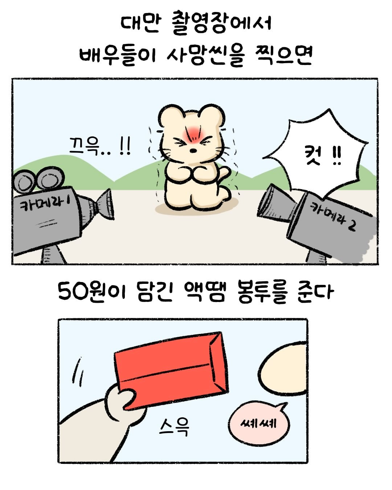
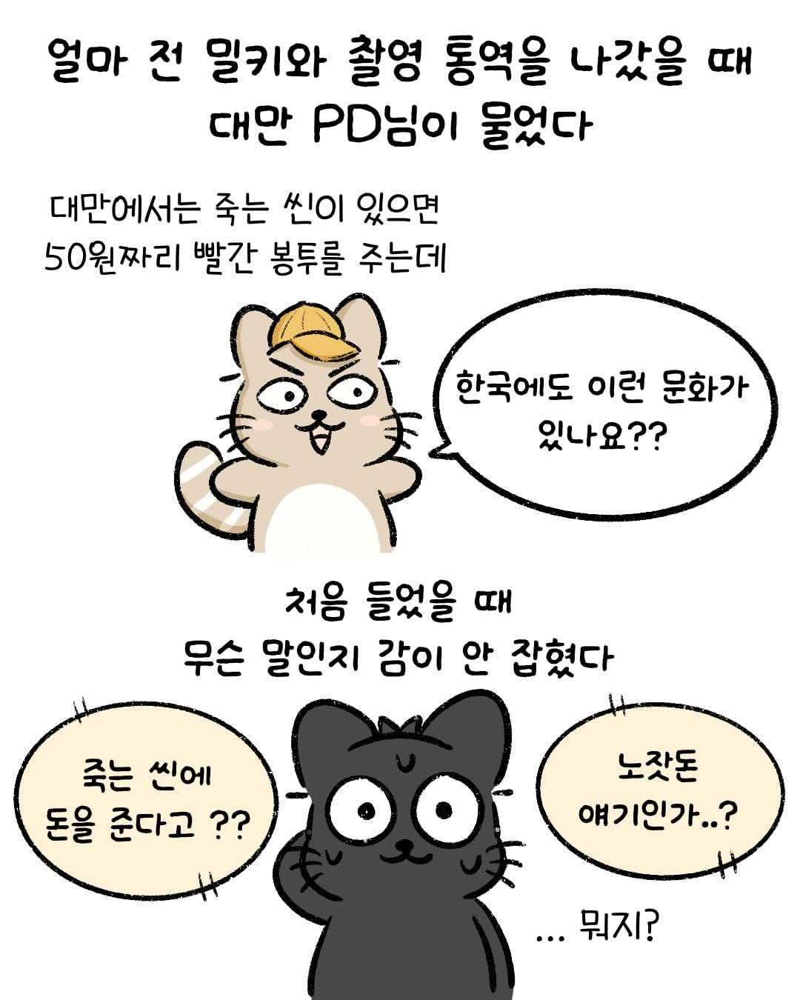
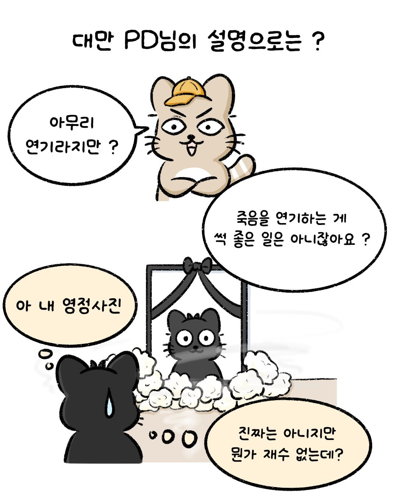
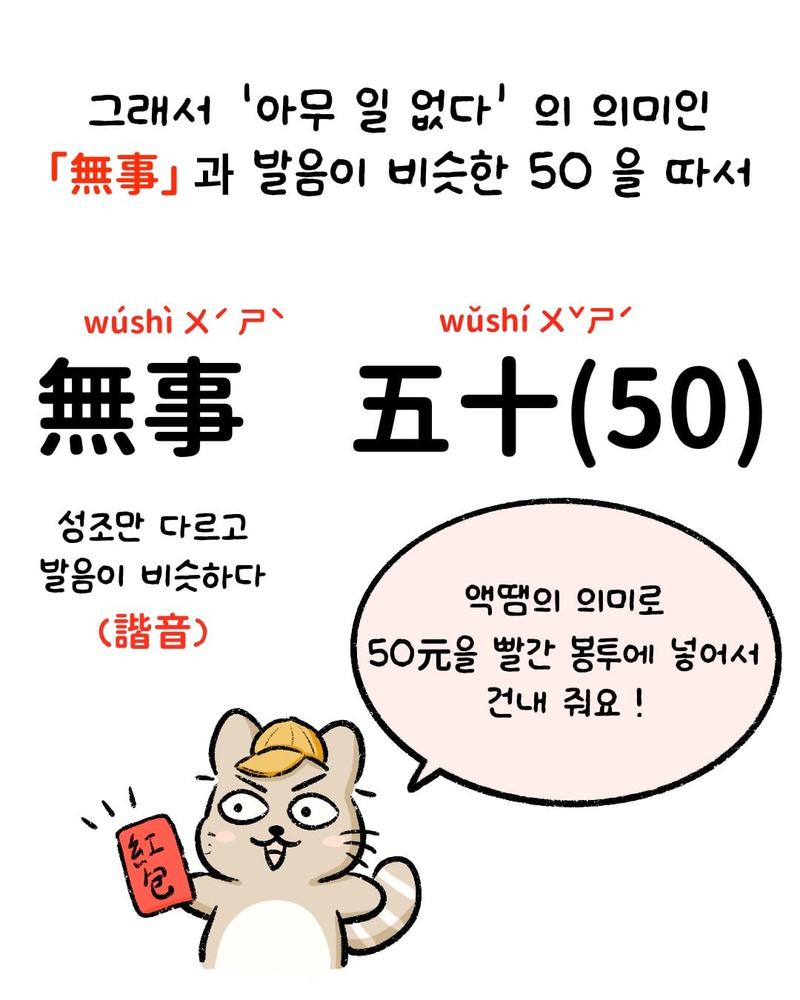
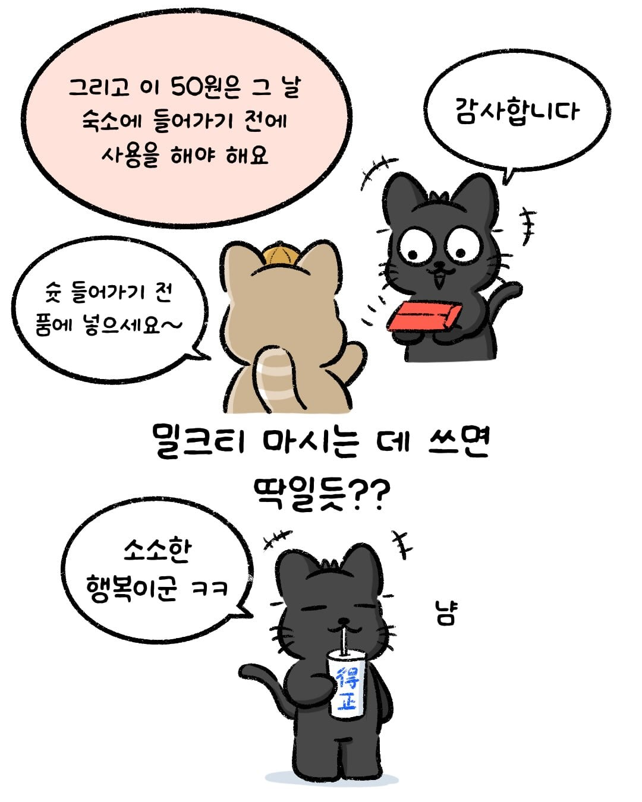
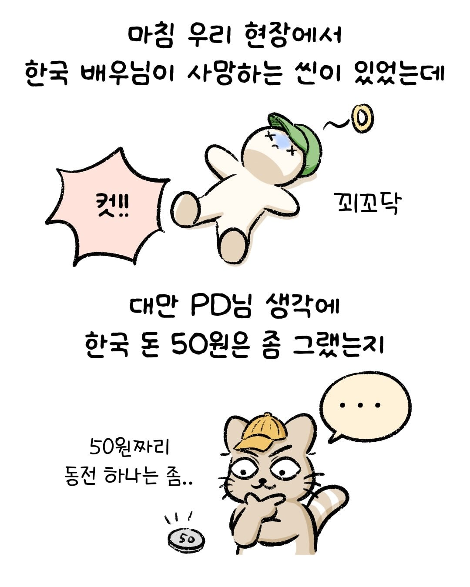
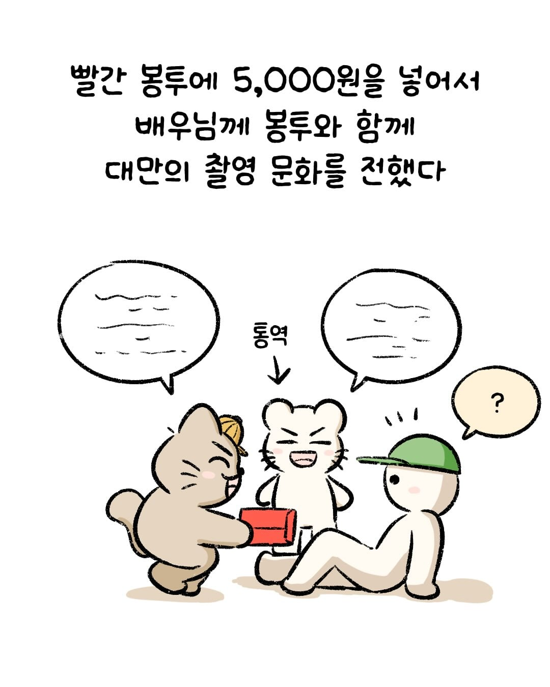
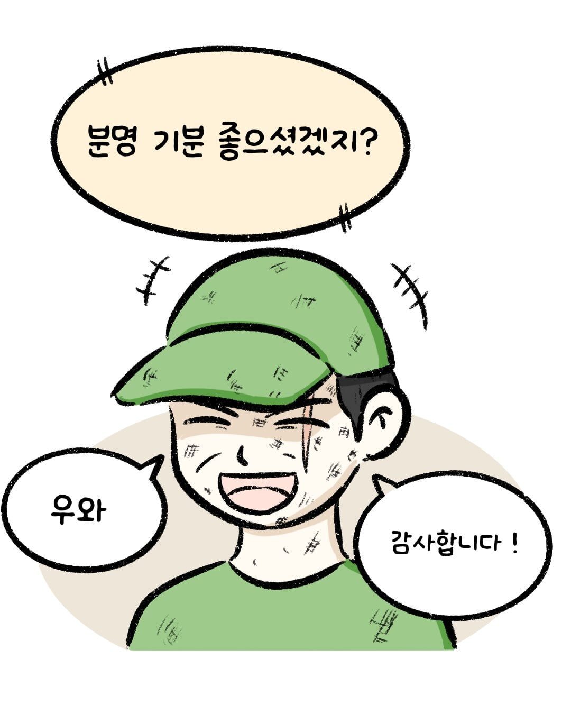

오...








오...

미신은 정에서나온다
글킨 하네
안 한다고 무슨 일이야 있겠냐만, 혹시라도 안 좋은 일 생기지 않도록 괜히 수고를 더 하는 일이니까 정이지 음음
ㄹㅇ 정감있네 ㅋㅋ
그러니까 굿 한번만 해봐 3천만원이야
굿~
3천만원도 줘
빨간글씨로 이름쓰면 죽는다는거엔 무슨 정이 있는거야
빨간이름을 쓰면 죽는다 카더라는 유래를 보니까 왕(빨간색은 왕의 색, 용포 생각해보면 됨)의자리를 넘본다고 인지되서 결국 역적으로 몰려 죽는거가 그렇게 와전된거더라
인재로 죽는거니 액땜이 없나 ㅋㅋ
사람 기분까지 챙겨주는 미신이야기는 보면서도 훈훈해져서 참 좋아
미신은 저렇게 써야지
중국 본토에선 엔진에 동전던지고 결혼식 신부 입장 스틸하고 염병 그딴 재수없는 행동이 뭔 복을 부른다고 생겨난건지
ㄹㅇ 염병한다고 향 존나큰거 수천명이 피워대서 대기질 씹창나고 ㅋㅋㅋ
그런짓하면 주변에서 죽도록 패야 없어질듯
그러고보니 한국 미신도 괜찮네 고사지내고 참석자들이 술 고기 나눠먹기
결혼식 앞둬서 장례식 안가는 건 쪼끔 그래
그게 옛날에는 무슨 병으로 죽었는지 몰라서 집에 백일도 안 된 애기가 있거나 경사 앞둔 사람은 조사 안 가는 게 미신이었다던데.
김갑수 선생님
얼마를 번거야??
숀빈 아재 대만에서 일했으면 재벌됐겠네
갑수형 떼돈 벌겐는데?
넘모 고마워요
씨예씨예
갑수형이 아니라 갑부형이었네
대규모 전쟁신 찍으면 빨간봉투 수백개 준비해야겠네 ㅋㅋㅋㅋ 귀여운 풍습이다
???: 그래서 죽는 모습을 안찍었습니다.
대신 한국은 영정사진 올라가면 돈 더 준다던데
인간적이다
대만도 원(위안) 쓰나?
나 여행 갔을 때 대만달러라고 돈 썼던것같은데
공식명칭은 대만달러가 맞는데 한자문화권 나라들은 역사적으로 돈을 원(둥글 원)이라고 불렀기에 명칭이 혼용되서 쓰는거
아아 그렇군요ㅎㅎ
감사합미당!!
미신을 믿진 않지만 저런 건 괜찮네 걱정하는 마음이 좋아보임 과하지도 않고
괴력난신을 논하지 말라
신기하네